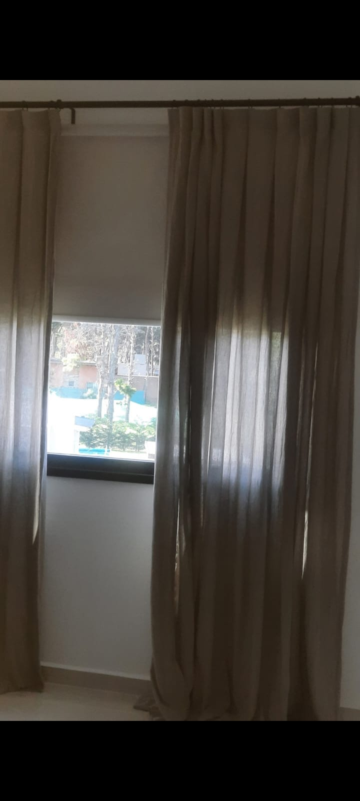
Roller Blackout
Bloqueo total de luz. Ideal para dormitorios y home cinema. Acabado prolijo, sin filtraciones.
Consultar telas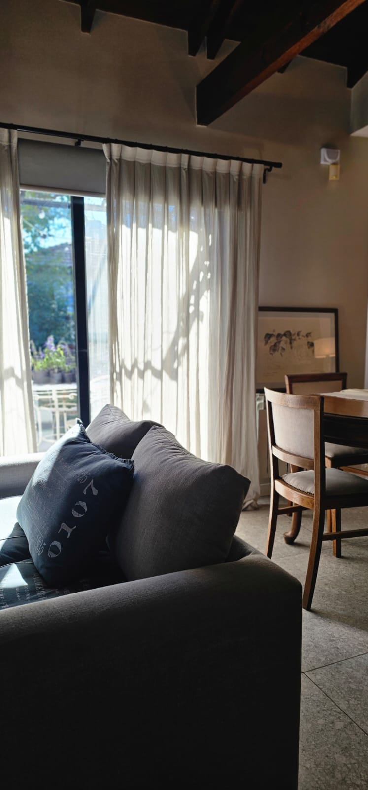
Estudio textil para obras y espacios
Cortinas y cortinados a medida en Buenos Aires. Diseño, confección e instalación de roller blackout, screen, telas naturales y venezianas, pensados para cada ambiente.
Sobre Entre Luz Home
Trabajamos cada cortina como una pieza única: tomamos medidas en tu casa, te asesoramos sobre la mejor tela según luz, ambiente y estilo, y entregamos una confección impecable, instalada y lista para disfrutar.
Buscamos lo que pocos hacen: que la cortina caiga perfecta, que la tela acompañe la decoración y que el sistema dure años.
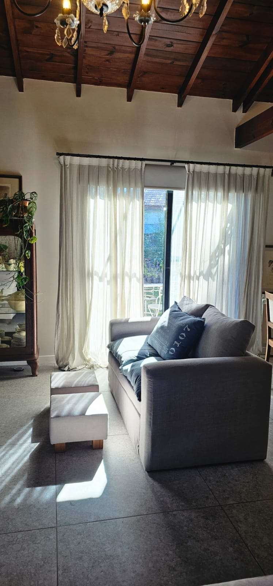
Productos
Cada producto se confecciona a medida con telas seleccionadas. Te asesoramos para elegir el sistema según la luz, la privacidad y el estilo del ambiente.

Bloqueo total de luz. Ideal para dormitorios y home cinema. Acabado prolijo, sin filtraciones.
Consultar telas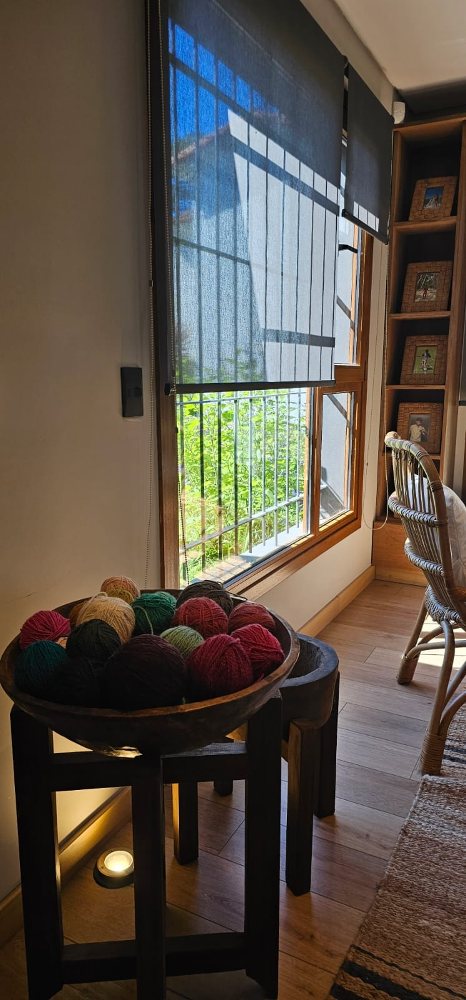
Filtra el sol y conserva la vista. La opción más versátil para living, oficina y comedores.
Consultar telas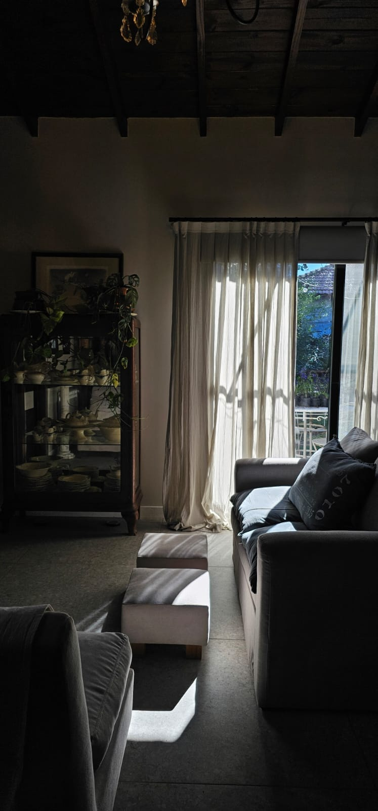
Caída elegante en lino, voile o gasas. Para sumar calidez y textura a cualquier ambiente.
Consultar telas
Roller blackout más cortinado de tela en un mismo carril. Oscurecimiento y diseño.
Consultar sistemas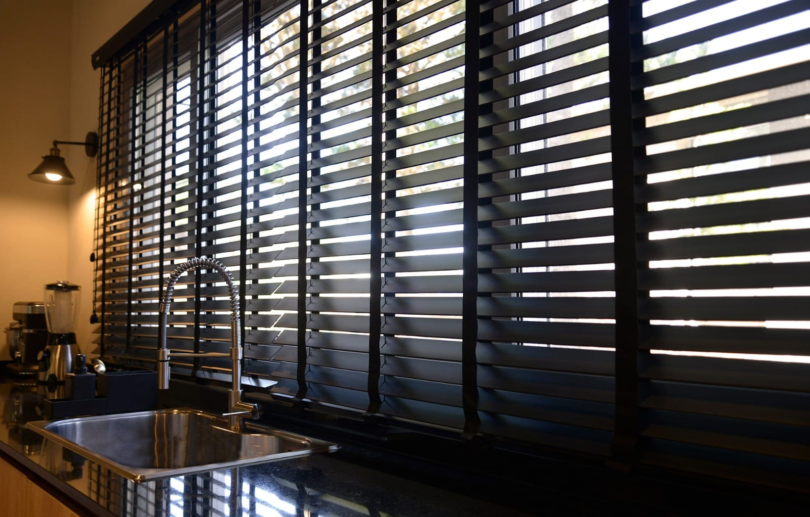
Lamas de madera que regulan la luz con precisión. Carácter, textura y privacidad en un mismo sistema.
Consultar venezianas
Sábanas, acolchados, almohadones y fundas a medida, con las mismas telas premium de los cortinados.
Consultar ropa de camaPor qué Entre Luz Home
Tomamos medidas en tu casa para que la cortina caiga exacta. Nada de medidas estándar.
Trabajamos con proveedores premium en blackout, screen, lino y voile. Todas con muestras físicas.
La confección y el montaje los hace nuestro propio equipo. Un solo responsable, de principio a fin.
Te ayudamos a elegir según la luz, el ambiente y el estilo. Te decimos también lo que no comprar.
Galería
Una selección de instalaciones recientes. Cada espacio fue medido, confeccionado e instalado por nuestro equipo.
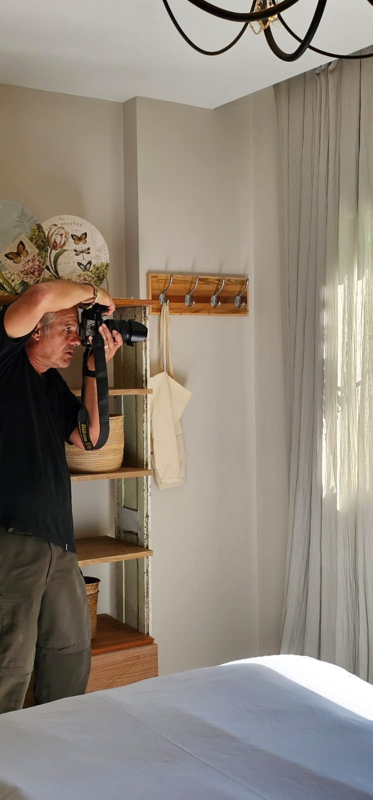
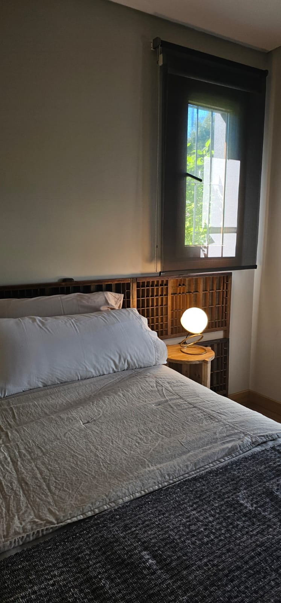
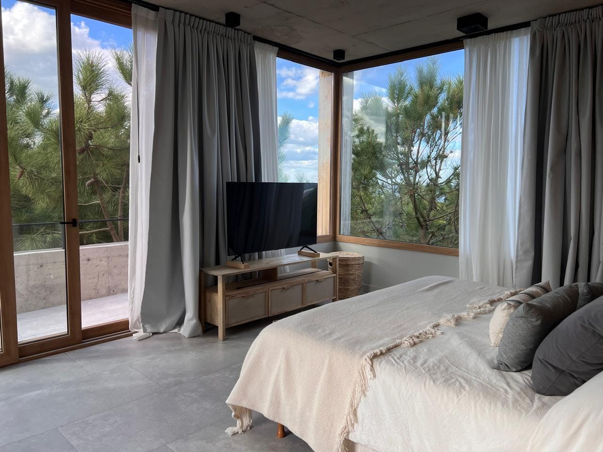
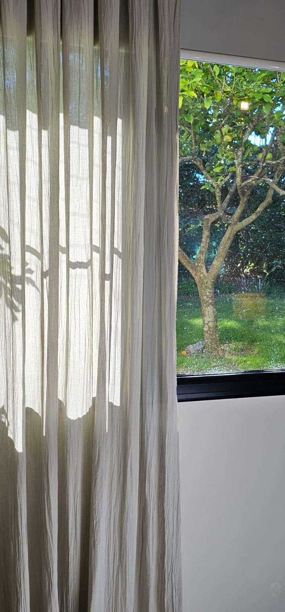
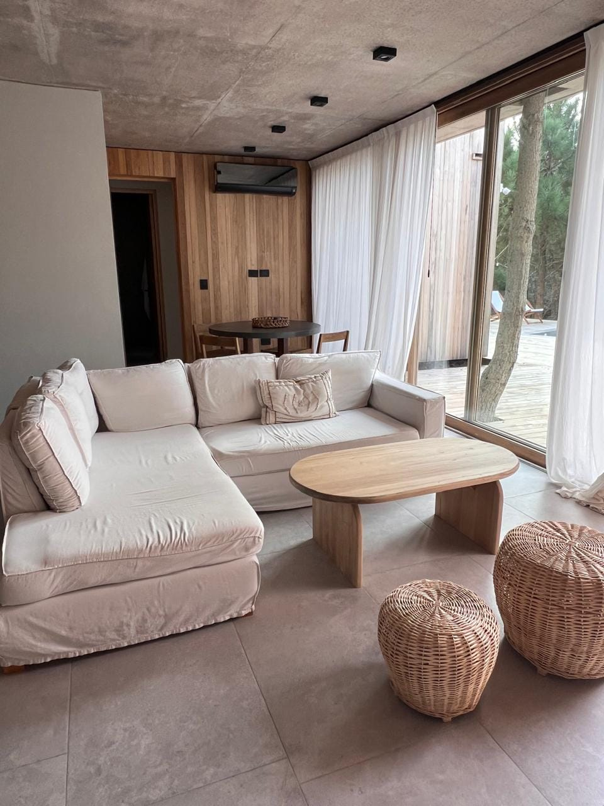

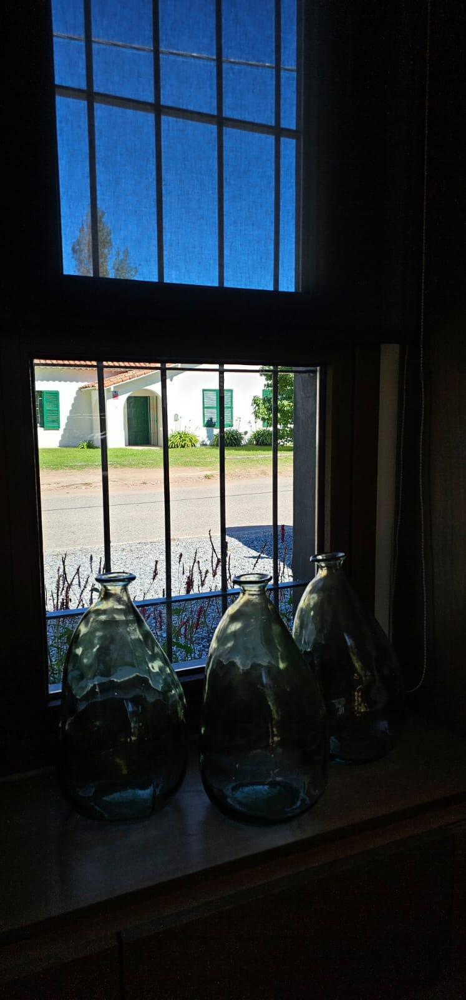

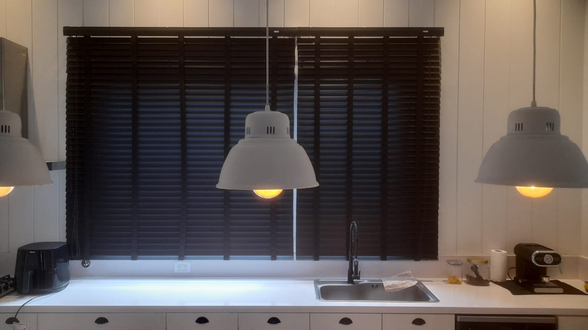
También en Entre Luz Home
Sábanas, acolchados, almohadones y fundas confeccionados con las mismas telas premium de nuestros cortinados. Dormitorios que hablan con un mismo lenguaje textil.
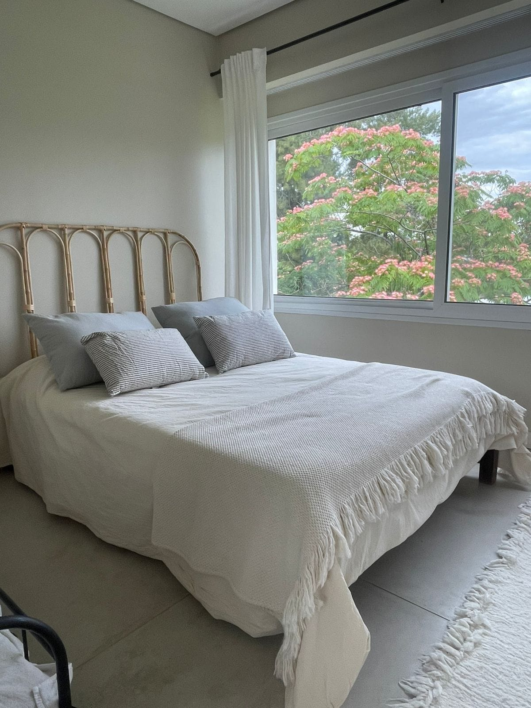


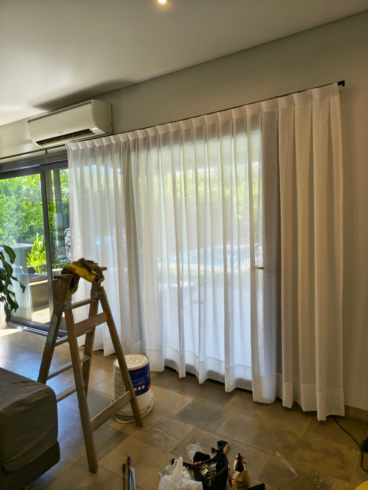
Cómo trabajamos
Nos contás por WhatsApp qué ambiente querés vestir. Te orientamos sobre opciones y rangos.
Coordinamos una visita sin cargo. Tomamos medidas, vemos la luz y llevamos muestras.
Te enviamos el detalle por escrito: telas, sistema, accesorios y plazos. Sin sorpresas.
Confeccionamos en taller propio e instalamos en tu casa. Te entregamos la cortina lista para usar.
Preguntas frecuentes
Sí, coordinamos una visita sin cargo. Llevamos muestras de telas, tomamos las medidas exactas y te asesoramos en el lugar sobre el mejor sistema para cada ventana.
Confeccionamos cortinas roller blackout, roller screen, cortinados de tela (lino, voile, gasas y telas naturales), venezianas de madera y sistemas combinados que unen roller con cortinado en un mismo carril. También hacemos ropa de cama a medida.
Una vez confirmado el presupuesto y la tela, el plazo habitual es de 10 a 15 días hábiles para confección e instalación.
El blackout bloquea el 100% de la luz, ideal para dormitorios y home cinema. El screen filtra el calor y los rayos UV conservando la vista al exterior; es la mejor opción para living, oficina y comedores.
Todo el proceso, desde la confección en nuestro taller hasta la instalación en tu casa, lo realiza nuestro propio equipo. Un solo responsable de principio a fin.
Contacto
Escribinos por WhatsApp con una foto de la ventana, las medidas aproximadas y el estilo que te imaginás. En el día te contestamos.
Escribirnos por WhatsAppAtención de lunes a sábados, de 8 a 19 hs · Buenos Aires y alrededores